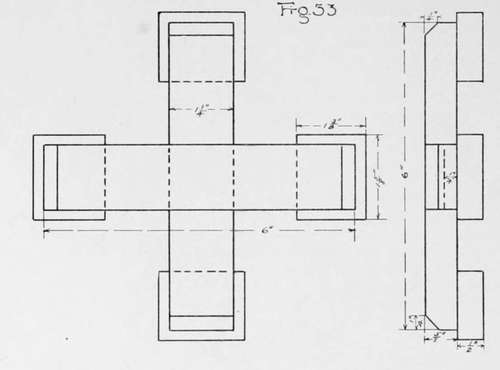
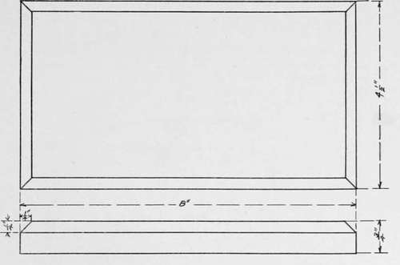
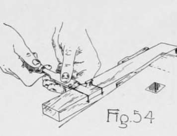
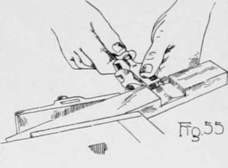
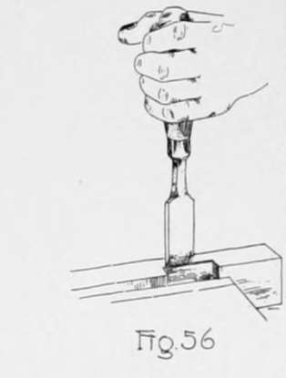
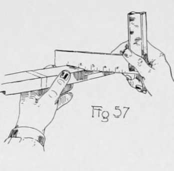
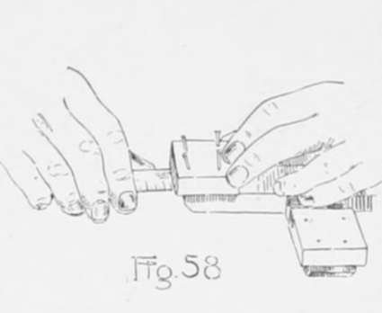
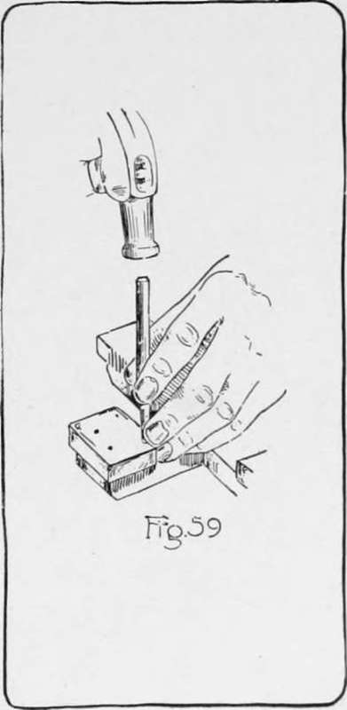
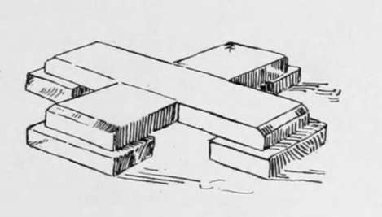
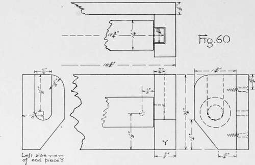

Chapter VI. Chiseling And Joining
Description
This section is from the book "Beginning Woodwork At Home And In School", by Clinton Sheldon Van Deusen. Also available from Amazon: Beginning Woodwork At Home And In School.
Chapter VI. Chiseling And Joining
The work of this chapter is given as a means of acquiring a knowledge of the fundamental principles of laying out and cutting a joint, and it will also emphasize the accuracy necessary in this class of work.
Flower Pot Stool
(Fig. 53). The material required will be a piece of white pine 13"x 1 1/2"x 3/4" for the cross-pieces, and one 9"x 1 7/8"x5/8" for the feet, also sixteen 1" brads. The new tools to be used are the chisel, hammer and nailset.
Flower Pot Stool.
(a) Plane the piece for the two cross-pieces of the flower-pot stool to the required width (11) and thickness (4) by a method similar to that explained in Chapter IV, a to k, but, of course, set the gage to the width and thickness given in -the working drawing; no second trials will be possible in planing this piece. Mark the working face and joint side in two places, as later it is to be cut into two pieces.
(b) Block-plane both ends of the piece as in Chapter IV, m.
(c) From each of these block-planed ends measure the length (12) of each of the pieces which are to form the cross, and draw knife lines square around the piece at the two points so determined. Do not cut this into two pieces until directed to do so in s.
(d) Consulting the working drawing determine the distance (13) from the end of one of the cross-pieces to the nearer edge of the joint. From one end of the piece of wood measure (as in Fig. 29) this distance on the working face, and as in Fig. 14 measure on from this point the exact width (11) of the joint, which is equal to the width of the piece of wood.
(e) With the beam of the try-square against the joint side, draw knife lines across the working face through these two points, and with the beam of the try-square against the working face extend each end of these lines down 1/4" on the joint side and the opposite side.
(f) On the surface opposite the working face measure from the other end of the piece the distance (13) to the nearer edge of the joint and then measure on from this point the exact width (11) of the joint.
(g) With the beam of the try-square against the joint side, draw knife lines across this surface through these two points, and with the beam of the try-square against the working face extend each end of these lines to within 1/4" of the working face on the joint side and the opposite side.
(h) Determine the distance (14) that the horizontal joining surfaces are to be above the bottom of the cross-pieces, and set the gage equal to this distance. With the gage-block against the working face, gage a line between each of the two pairs of knife lines on the joint side and the side opposite.
(i) Place the piece on the bench-hook with the working face up and with the end of the piece having the knife lines on that surface to the right. Saw with the back-saw so that the right side of the saw cut comes exactly to the knife line that is nearer to the end. Saw until the points of the saw teeth just come, at the same time, to the gage line on the joint side and the side opposite. Great care should be "used in doing this sawing.
(j) In a similar manner make another saw cut so that the left side of the cut comes exactly to the other knife line, and saw down to the gage lines.
(k) Turn the piece over so that the surface opposite the working face is on top, and with the knife lines for the joint near the right end; then saw to the gage lines as in i and j.
(1) Clamp the piece in the vise in a slanting position with the working face on top and so that the part between the two saw cuts which is to be chiseled out is a little above the bench and to the right of the vise (Fig. 54). Hold the handle of the chisel in the right hand and the blade, with its bevel on top, between the thumb and fingers of the left hand, which should rest against the front side of the piece. Push the chisel in a direction at right angles to the length of the piece, and with cutting edge slightly inclined to the surface of the piece, so that the left end of the cutting edge moves in a line near the left saw cut and the right end is raised to such a height that it is just above the surface of the wood. In this manner a cut is made about half way across the piece. The left hand being held stationary against the piece, the pressing together of the thumb and fingers may be used to keep the chisel from cutting too far.
Chise-Ling Board.
(m) The second cut should be made in a similar manner about half way across the piece, but the right end of the cutting edge of the chisel should be lower than the left and should cut near to the right saw cut. The left end should be just above the surface of the wood.
(n) Alternating cuts similar to those in 1 and m should be made until the lower edge of the chisel cuts about half way down to the gage line.
(o) Reverse the piece in the vise so that the part just chiseled is on top and a little to the left of the vise. This brings toward the worker the part between the two lines that has not been chiseled out. Then alternate the cuts as described in 1 and m until the lower edge of the chisel cuts to the gage line.
(p) Change the position in the vise to that used in 1, and continue the alternating cuts until the lower edge of the chisel cuts to the gage line. If the chiseling has been well done a low distinct ridge of wood will extend across the piece midway between the two sawed surfaces.
(q) With the piece clamped as in o, pare off the middle of this ridge holding the chisel as above, except that the cutting edge is parallel to the gage line (Fig. 55). Pare half way across and to within about of the gage line; then reverse the piece and do the same from the other side.
(r) Clamp the piece in the vise with the joint side up and the partly made groove near the middle of the vise. With the left hand, hold the chisel in a vertical position with the sharp edge in the gage line and the bevel toward the groove (Fig. 56). Use the palm of the right hand as a mallet and strike the handle of the chisel a light blow. This will make a good, right-angled edge exactly where it should be. Turn the piece over in the vise and do the same on the side opposite the joint side. Clamp the piece and hold the chisel as in q; then pare out the bottom of the groove until it is a true surface, testing it with the straight edge (Fig. 57). Great care must be used that the chisel does not slip and cut the sharp right-angled edges. This completes the cutting of the first groove. The second should be made in the same way.
(s) After the second groove is completed the piece should be sawed into two parts. Saw each part about 1/32" longer than the length indicated by the knife lines, and block-plane them to their correct length.
(t) Determine from the working drawing the distance (14) the pencil lines for the chamfer should be from the edge formed by the ends and the surface opposite the working face, then lay out the chamfer on the ends of the two pieces as explained in Chapter IV, r and s, and block-plane the chamfers as in Chapter IV, t. In this block-planing, care should be used that the center line of the plane is held at a considerable angle with the edge being planed or the corners will be splintered. When the chamfers are completed the two pieces may be put together. If a good joint has been made, they may be forced together with the hands and will not fall apart of their own weight.
(u) Next take the piece for the feet, and by a method similar to that explained in Chapter IV, a to k, plane to width (5)1 and thickness (15), marking working face and joint side in at least four places; then block-plane one end. From this block-planed end, measure the length (16) of one of the feet of the flower-pot stool; then square around the piece at this point with the knife and try-square. Saw a little longer than the length indicated; then block-plane to length. Again, block-plane the end of the piece that is left, and continue as above, making each of the other feet as explained.
(v) One of these feet should be nailed under each end of the cross-pieces, and should have its working face against the cross-piece. Four 1" brads should be used. The two outer ones should be a little closer together than the two inner ones, and should be slightly inclined so that the points will not be liable to prick through the chamfer. Drive the nails into one of the feet until the points just prick through ; then place it on the cross-piece, changing its position until there is a uniform margin at the end and on each side of the cross-piece. This may be determined by measuring, as in Fig. 58.
(w) The nails should not be driven entirely in with the hammer, as it will mar the surface of the wood, but by using the nailset as in Fig. 59, they may be driven in until their heads are slightly below the surface. In using the nailset it should be held in the left hand with one finger resting on the piece of wood and against the side of the nailset as in Fig. 59. This serves as a support to hold the point of the set on the head of the nail while the top of the nailset is struck a light blow with the hammer. This completes the flower-pot stool.
"The length of a piece of wood is usally measured in the direction of the grain, even if that is shorter than the width, which is measured crosswise of the grain. The grain of wood in the feet is to extend in the same direction as that in the piece to which it is attached.
This piece as completed might be used as a base for a small Christmas tree. In this case it would be well to bore a hole of the required size for the lower end of the tree through the middle of the upper part of the joint and a smaller hole through the lower part of the joint. Through this smaller hole a screw could be entered from below into the body of the tree. A piece made in the same manner but to larger dimensions would make a good base for a large tree.

Continue to:
- prev: Chapter V. Curve Sawing And Spokeshaving
- Table of Contents
- next: Chapter VII. Chiseling And Planing